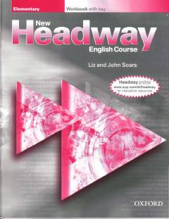

NHIngliz tili boshlang'ich darajasi uchun mo'ljallangan amaliy mashqlar to'plami.
Ushbu kitob ingliz tilini o'rganayotgan boshlang'ich darajadagi o'quvchilar uchun mo'ljallangan mashqlar to'plamidir. Unda grammatika, lug'at boyligi va yozish ko'nikmalarini mustahkamlash uchun turli xil topshiriqlar jamlangan.